PEPTIQ MX · Edición 2026
Beyond Biology
Volumen I · Research-grade · México
Beyond
Biology.
Hack your limits.
La guía editorial de las 14 líneas PEPTIQ. Mecanismos celulares, protocolos reportados en literatura, stacks clínicos y referencias verificables. Cada lote, un COA público de Janoshik Analytical.
Prefacio · Por qué existimos
Pureza que no se declara,
se verifica.
Empezamos PEPTIQ porque estábamos cansados de comprar péptidos que prometían 99% de pureza en su empaque y entregaban 87% en el cromatograma. Cansados de marcas mexicanas que vendían "research peptides" sin un solo COA público en su sitio. Cansados de pagar premium por commodities reetiquetados.
PEPTIQ es una marca editorial de péptidos research-grade construida sobre una sola obsesión: cada lote tiene su Certificado de Análisis publicado en peptiqmx.com antes de salir a venta. El laboratorio es Janoshik Analytical, en Praga, acreditado bajo ISO/IEC 17025 — el mismo que usan las marcas premium de Estados Unidos y Europa Occidental.
Esta guía es la documentación técnica de 14 líneas. No es una pieza de marketing. Es el material que dimos primero a las clínicas de medicina estética, longevidad y rendimiento que nos pidieron entender, antes de comprar, qué es lo que estaban pidiendo a sus pacientes — perdón, a sus sujetos de investigación — que se inyectaran.
Cada protocolo aquí descrito proviene de literatura peer-reviewed citada al final de cada capítulo. Cada dosis, cada frecuencia, cada duración de ciclo está construida sobre estudios clínicos públicos. Si una afirmación no tiene fuente verificable, no aparece en estas páginas.
Lee con calma. Marca lo que te interese. Cuando estés listo, escríbenos por WhatsApp y te mandamos el COA del lote que te interese — antes, no después, de tu compra.
— Edson Noyola
Fundador, PEPTIQ MX

Janoshik Analytical · HPLC monitor · Praga
Cómo leer esta guía.
Cada línea PEPTIQ ocupa entre dos y cuatro páginas. Verás, en orden: hero editorial, mecanismo celular, usos reportados en literatura, tabla de protocolo (dosis · frecuencia · vía · duración), stack clínico recomendado, observaciones de seguridad y bibliografía. Las páginas 28 a 32 cubren reconstitución, verificación de COA, programa B2B y aviso regulatorio.
ICarta del fundador · por qué existimos02
IIQué son los péptidos · lenguaje celular04
IIIPor qué la pureza importa · Janoshik · ISO/IEC 1702506
IVLas 14 líneas PEPTIQ · índice visual08
01Wolverine · BPC-157 + TB-500 · recuperación09
02GLOW Trinity · BPC + GHK-Cu + TB-500 · piel11
03Highlander · NAD+ + Epithalon · longevidad13
04Prime Titan · Tesamorelin + CJC + Ipamorelin15
05Shred · Retatrutide + Semaglutide + Cagrilintide17
06Sleep Reset · Ipamorelin nocturno + Epithalon19
07Vitality · PT-141 + Kisspeptin · libido / eje HPG20
08Neuro · Semax + Cerebrolysin · cognición21
09Visceral Cut · Tesamorelin enfocado en grasa visceral22
10GLOW Cabello · AHK-Cu · folículo piloso23
11Menopause Reset · Kisspeptin + GHK-Cu24
12Gut Reset · BPC-157 + KPV · mucosa intestinal25
VCómo elegir tu protocolo · matriz objetivo → línea26
VIReconstitución y manejo · paso a paso28
VIIVerificación de COA · NFC + URL pública30
VIIIPrograma B2B clínicas · margen y soporte31
IXContacto · concierge · WhatsApp32
XAviso regulatorio · Research Use Only32
Capítulo II · 01 de 02
Cartas de instrucción
que tu cuerpo ya sabe leer.
Un péptido es una cadena de entre dos y cincuenta aminoácidos. Tu cuerpo fabrica miles de ellos cada día. Funcionan como mensajeros: una célula los libera, otra los recibe, el mensaje ejecuta una acción muy específica.

Cromatografía HPLC de un lote BPC-157 · pico único a 99.4% · Janoshik 2026
Mensajeros, no fármacos
A diferencia de un fármaco sintético, un péptido administrado de forma exógena amplifica una señal que tu cuerpo ya emite. No crea una respuesta artificial: refuerza un canal endógeno que con la edad pierde volumen. Esto explica el perfil de seguridad relativamente alto de los péptidos correctamente sintetizados frente a moléculas pequeñas farmacéuticas.
Los péptidos terapéuticos modernos abarcan una gama enorme: hormona-secretagogos como la familia GHRH (Tesamorelin, CJC-1295), reguladores de señalización tisular (BPC-157, TB-500), tripéptidos de cobre con afinidad a fibroblastos (GHK-Cu, AHK-Cu), neuropéptidos (Semax, Selank), análogos de incretinas (Semaglutide, Retatrutide) y fragmentos inmunomoduladores (KPV, Thymosin α-1).
Cada uno tiene un receptor distinto, una vía de administración óptima y una farmacocinética particular. La diferencia entre un protocolo que funciona y uno que falla casi nunca está en el péptido: está en la pureza, la dosis, la frecuencia y el timing.
El reloj biológico de la producción
A partir de la tercera década de vida, la producción endógena de muchos péptidos clave declina de forma sostenida. La hormona del crecimiento cae aproximadamente 14% por década después de los 30. La producción de NAD+ en músculo esquelético se reduce alrededor de 50% entre los 20 y los 60 años (Verdin, 2015). Los niveles cutáneos de GHK-Cu disminuyen entre 60 y 70% entre los 20 y los 60.
Reponer una señal endógena que el cuerpo ya no fabrica al volumen óptimo es la lógica central detrás de todo el espacio "longevity" y "regenerative". No se trata de añadir algo extraño: se trata de devolver al sistema lo que el sistema producía mejor cuando era joven.
Esto no equivale a inmortalidad ni a juventud eterna. Equivale, en literatura peer-reviewed, a mejor recuperación post-ejercicio, mejor reparación tisular, mejor respuesta inmune local, mejor calidad de sueño, mejor sensibilidad a insulina, mejor síntesis de colágeno. Cada efecto, cuantificado en estudios independientes citados a lo largo de esta guía.
Capítulo II · 02 de 02
Vías, ventanas, moléculas frágiles.
La vía de administración no es un detalle menor. Un péptido administrado por la vía equivocada simplemente no llega al receptor — y todo lo que cuesta queda inactivo en el torrente.
Subcutánea — el estándar
El 80% de los péptidos research-grade se administran por vía subcutánea (SC), generalmente en abdomen, muslo o tríceps. La razón es simple: la mayoría de péptidos son destruidos por las proteasas del estómago, lo que descarta la vía oral salvo péptidos pequeños (KPV, BPC-157 con cubierta entérica). La vía SC permite absorción gradual, vida media adecuada y autoinyección con jeringa de insulina U-100.
La inyección se hace con aguja 31G corta (8 mm), pellizcando la piel a 45–90°. La técnica correcta es indolora cuando se domina.
Topical, intranasal, oral entérico
GHK-Cu y AHK-Cu funcionan por vía topical formulados en serum o crema (concentración 0.05–1% según uso). Penetran estrato córneo y llegan al fibroblasto dérmico.
Semax y Selank, neuropéptidos rusos clásicos, tienen vía intranasal validada — el bulbo olfatorio ofrece una ruta directa al sistema nervioso central. KPV en cápsula con cubierta entérica resiste pH gástrico y libera el péptido en intestino delgado, ideal para enfermedad inflamatoria intestinal.
Por qué importa la temperatura
Los péptidos son moléculas frágiles. La forma liofilizada (polvo seco) es estable durante meses a temperatura ambiente. Una vez reconstituida con agua bacteriostática, la solución es estable aproximadamente 28 días refrigerada a 2–8 °C. Congelar la solución reconstituida fragmenta el enlace peptídico por cristalización; agitar violentamente el vial rompe la estructura terciaria. Estas dos malas prácticas explican la mayoría de protocolos "que no funcionaron" en literatura gris.
Cómo se mide un protocolo
Cada línea PEPTIQ documenta cuatro variables: dosis en microgramos o miligramos, frecuencia diaria o semanal, vía de administración y duración del ciclo. La quinta variable, menos comentada pero crítica, es el timing circadiano — los secretagogos GH se administran 30 minutos antes de dormir para no interferir con el pulso natural; Tesamorelin se administra en ayunas matinales para evitar el bloqueo por insulina.
Tracking honesto
Recomendamos un cuaderno de protocolo simple: fecha, dosis, vía, hora, foto estandarizada (si aplica), score subjetivo de energía y sueño en escala 1–10, y al menos un marcador objetivo (Oura, Whoop, hsCRP, glucosa en ayunas). Sin este registro, ningún ciclo puede ser evaluado seriamente.
El cuerpo cambia despacio. Un protocolo de ocho semanas no se juzga en la semana dos. Cualquier marca que prometa transformación visible en quince días está vendiéndote teatro, no biología.
Capítulo III · 01 de 02
El 8% que no aparece en la etiqueta.
Un péptido al 92% no es 8% inerte. Ese 8% restante es lo que separa una marca clínica de una marca de impostor. Es donde se esconden los solventes residuales, los metales pesados, las endotoxinas bacterianas y los fragmentos truncados de síntesis.
Qué se esconde en el 8%
Cuando un fabricante chino reporta "≥95% HPLC" en su Certificado de Análisis interno, lo que no reporta suele ser más interesante que lo que reporta. Una síntesis de fase sólida (SPPS) de péptidos largos como Tesamorelin (44 aminoácidos) deja siempre residuos: TFA (ácido trifluoroacético) usado como sal estabilizante, acetonitrilo de la HPLC, DMF como solvente de acoplamiento, y fragmentos truncados — péptidos con uno o dos aminoácidos faltantes que no fueron eliminados en la purificación.
A esto se suma la carga endotóxica bacteriana: si el péptido fue manejado en condiciones no estériles, la liofilización atrapa lipopolisacáridos (LPS) que tu sistema inmune interpreta como infección activa. El resultado en literatura gris suele ser eritema, induración, fiebre transitoria — lo que muchos reportan como "alergia al péptido" cuando en realidad es contaminación del lote.
La pureza HPLC es una métrica necesaria pero insuficiente. Un COA serio reporta también: identidad por espectrometría de masas, contenido de TFA residual, agua, contaminantes bacterianos y, en péptidos críticos, secuencia confirmada por digestión enzimática.
Por qué Janoshik
Janoshik Analytical es un laboratorio independiente con sede en Praga, República Checa, acreditado bajo ISO/IEC 17025 — la norma internacional para laboratorios de ensayo. El mismo laboratorio que utilizan las marcas premium de Estados Unidos (sin nombrarlas) y los principales distribuidores europeos.
Ser independiente del fabricante es lo que da credibilidad a la cifra de pureza. Un COA emitido por la fábrica que sintetizó el péptido no tiene incentivo a reportar un resultado por debajo del umbral de venta. Un COA emitido por un laboratorio externo, pagado por lote, sí.
Cada lote PEPTIQ se envía a Janoshik antes de salir a venta. El COA resultante se publica en peptiqmx.com con su número de lote. Si recibes un vial cuyo COA no está accesible públicamente, te reembolsamos el lote completo.
Fuentes: ISO/IEC 17025:2017 General requirements for the competence of testing and calibration laboratories · Janoshik Analytical methodology, peptide analysis (publicly available) · Mant CT et al. HPLC of peptides and proteins: methods and protocols Methods Mol Biol 2012.
Capítulo III · 02 de 02
El COA es público,
o no es COA.
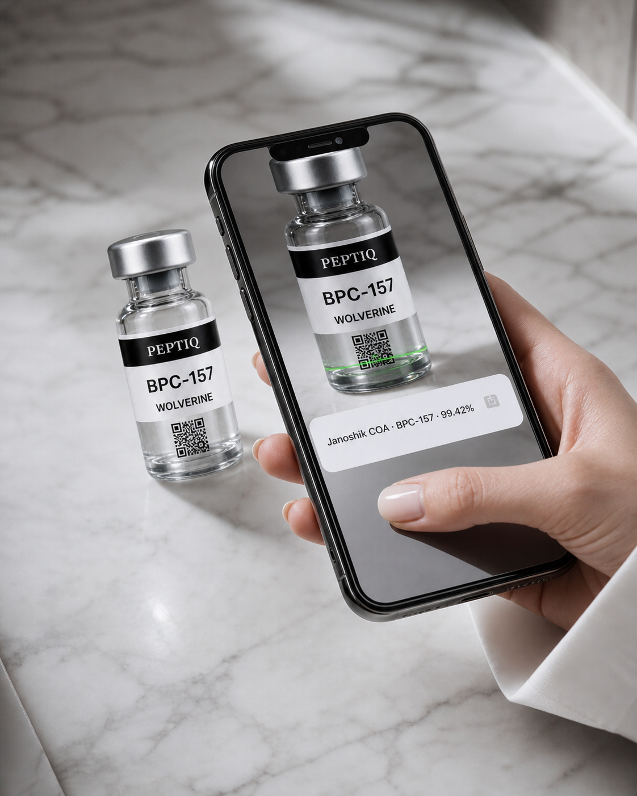
Cada caja PEPTIQ incluye chip NFC · COA accesible en menos de cuatro segundos
Cada caja PEPTIQ incluye un chip NFC tipo NTAG213 embebido bajo el sello holográfico. Acercar un teléfono moderno (iPhone XS o posterior, Android compatible) abre directamente la URL pública del lote: peptiqmx.com/coa/[número-de-lote]. Esa página muestra el cromatograma original, la firma del químico responsable, la fecha de análisis y la pureza HPLC y por espectrometría de masas.
No usamos códigos QR como única vía: una etiqueta con QR puede ser falsificada en una imprenta. Un chip NFC con UID criptográfico es más difícil de clonar. Al abrir el COA, el sistema registra el primer escaneo y marca cualquier escaneo posterior con un sello de verificación — útil para clínicas que quieren saber si una caja ya fue abierta antes de recibirla.
- Acerca tu teléfono al sello holográfico. NFC se activa automáticamente; sin app intermediaria.
- Lee el cromatograma. Pico único, integración >99%, ausencia de picos secundarios.
- Verifica la fecha. COA con más de 18 meses pierde validez por degradación; pídenos uno fresco.
- Cruza el lote con tu vial. El número de lote impreso debe coincidir con el del COA público.
Garantía COA
Si recibes un lote PEPTIQ cuyo COA no está accesible en peptiqmx.com en el momento de tu compra, o si la pureza reportada en el COA es inferior a 98% HPLC en péptidos individuales o 97% en blends multipéptido, te reembolsamos el lote completo y absorbemos costos de envío. Es la única forma honesta de defender una marca que se llama "Beyond Biology".
Las 14 líneas PEPTIQ.
Un mapa visual rápido del catálogo. Cada línea es una respuesta a un objetivo concreto — recuperación, piel, longevidad, composición corporal, sueño, libido, cognición, cabello, mucosa intestinal — construida sobre los péptidos que la literatura clínica respalda con mayor cuerpo de evidencia.
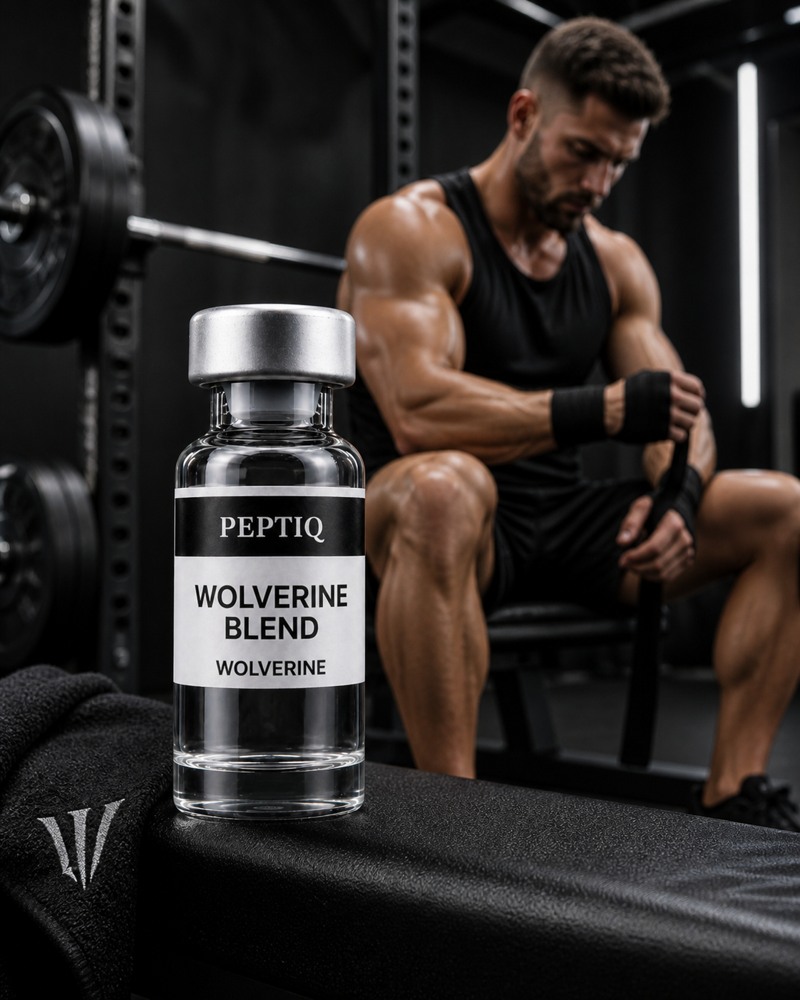
01 · Recuperación
Wolverine
BPC-157 + TB-500
02 · Piel
GLOW Trinity
BPC + GHK-Cu + TB-500
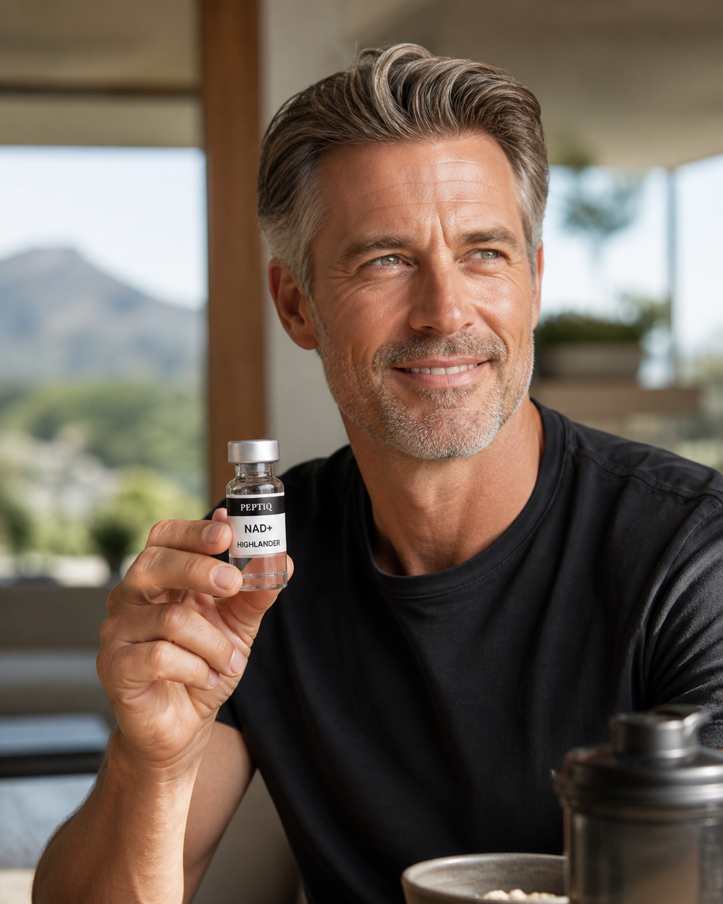
03 · Longevidad
Highlander
NAD+ + Epithalon
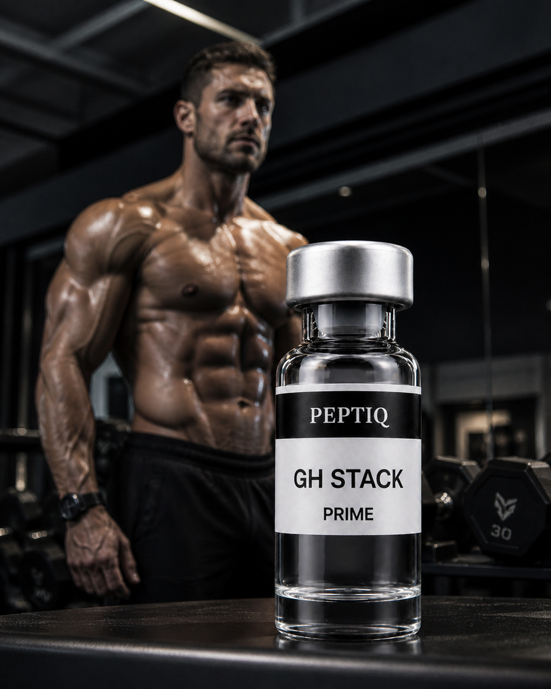
04 · Performance
Prime Titan
Tesamorelin + CJC + Ipa
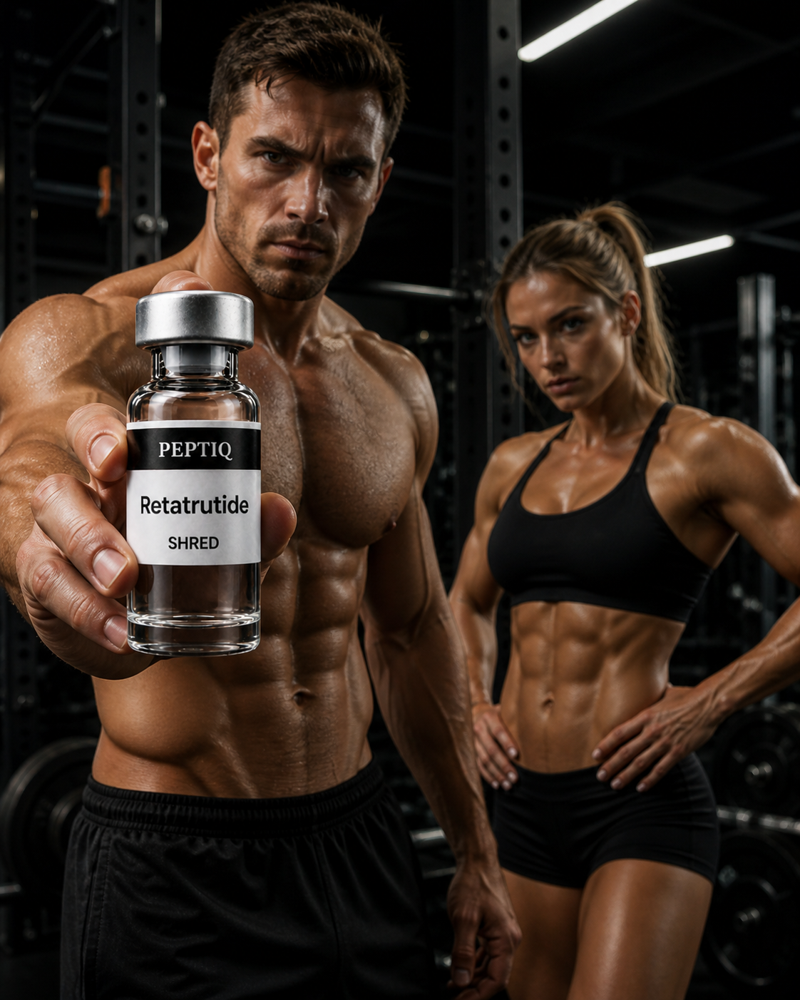
05 · Composición
Shred
Retatrutide · Semaglutide
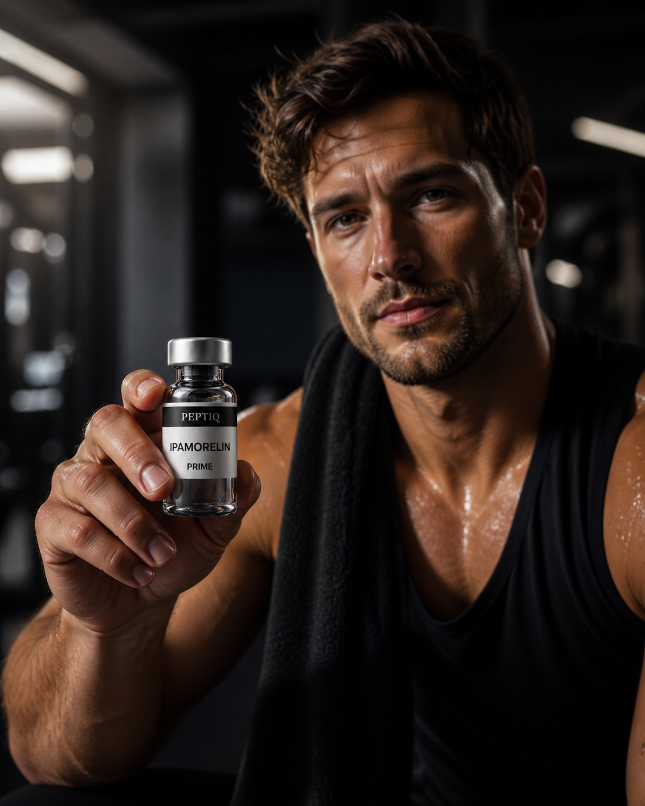
06 · Sueño
Sleep Reset
Ipamorelin + Epithalon
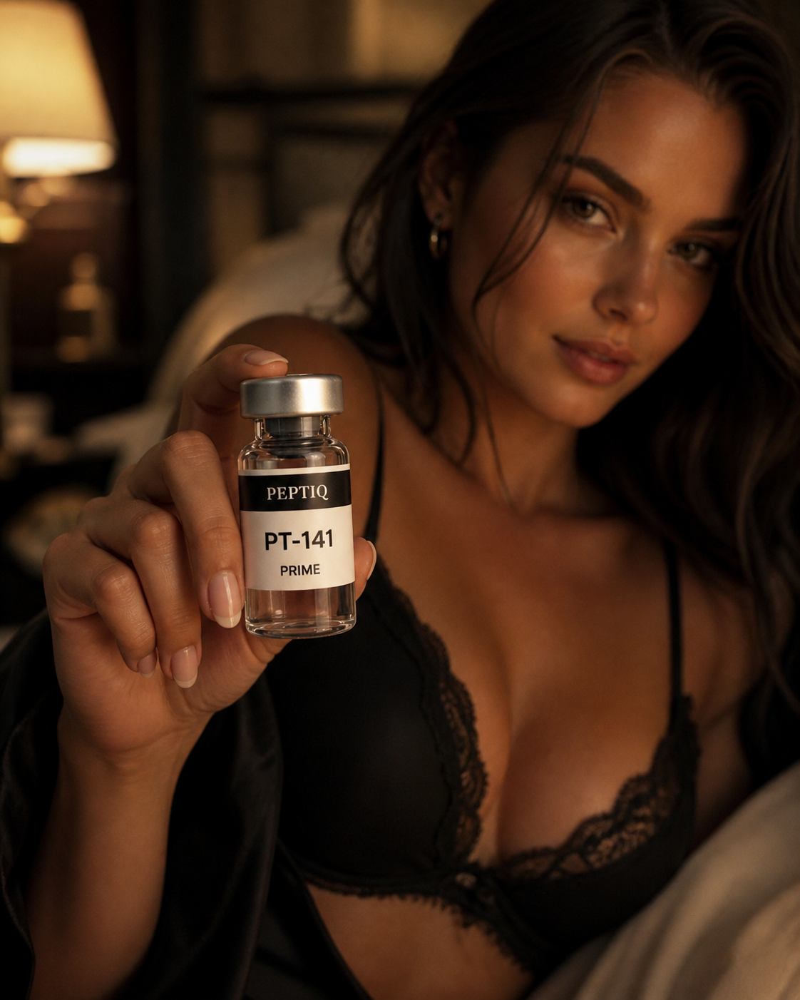
07 · Vitalidad
Vitality
PT-141 + Kisspeptin
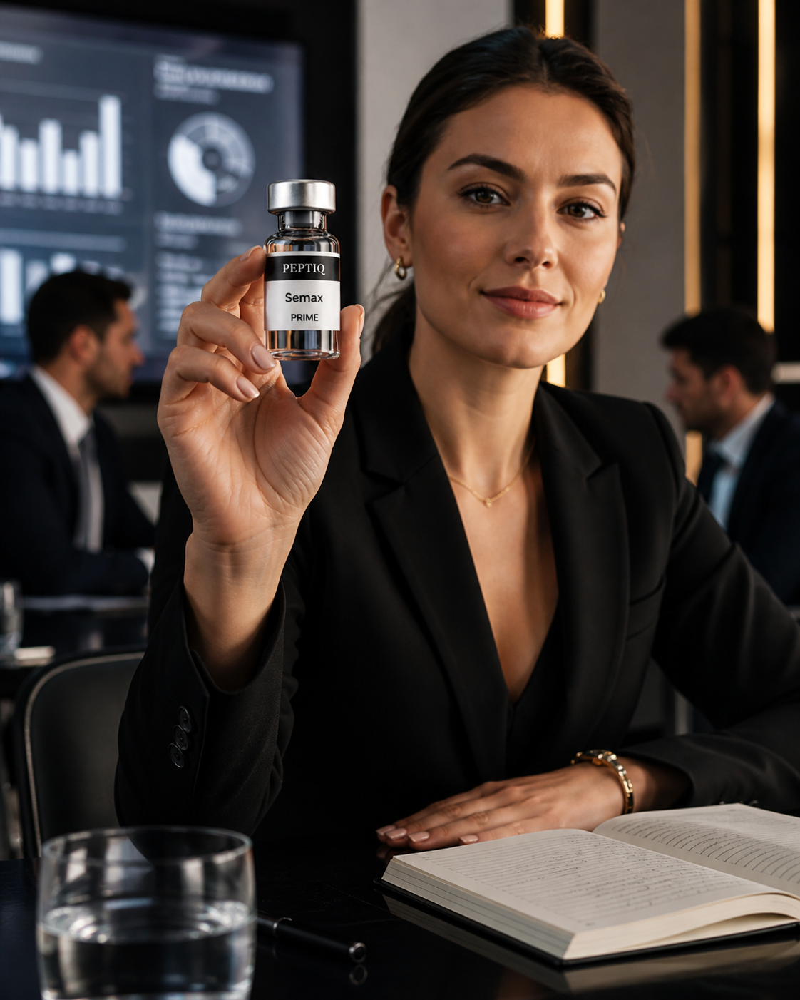
08 · Cognición
Neuro
Semax + Cerebrolysin

09 · Visceral
Visceral Cut
Tesamorelin focalizado
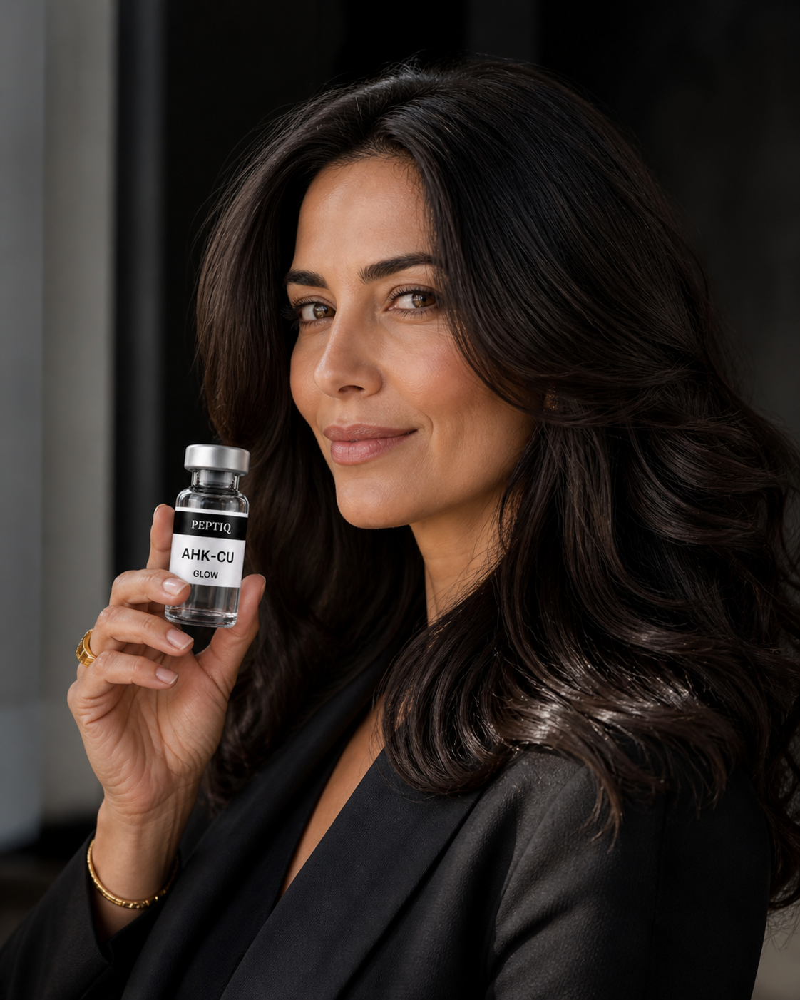
10 · Cabello
GLOW Cabello
AHK-Cu

11 · Menopausia
Menopause Reset
Kisspeptin + GHK-Cu
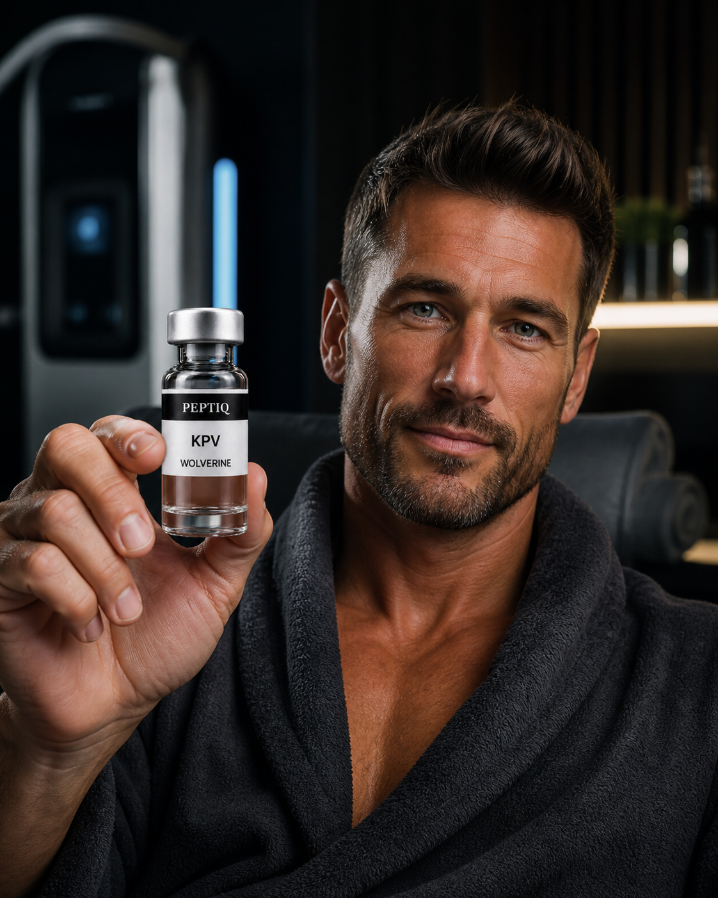
12 · Intestino
Gut Reset
BPC-157 + KPV
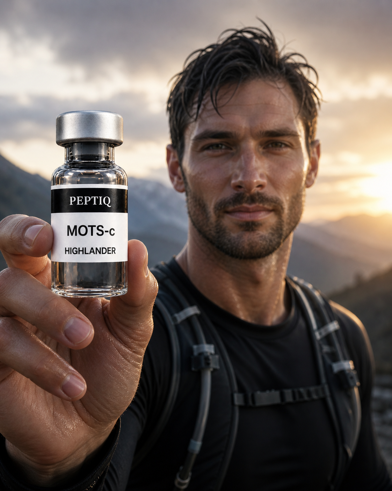
13 · Mitocondria
Mito Boost
MOTS-c · 5-Amino-1MQ
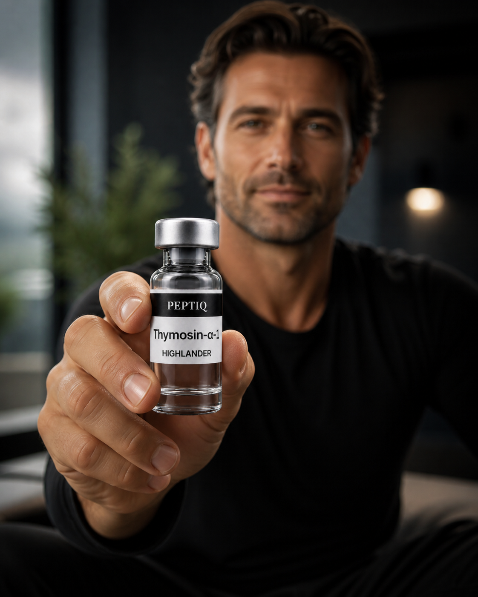
14 · Inmune
Immune Reset
Thymosin α-1 · LL-37
Wolverine · BPC-157 (research-grade compound) + TB-500
Línea 01 · Recuperación & reparación tisular
Wolverine.
Tendón, ligamento, mucosa.
Protocolo de referencia para lesión de tejido blando. Combina BPC-157 (péptido gástrico citoprotector, 15 aminoácidos) y TB-500 / Thymosin β-4 (43 aminoácidos, movilizador de actina celular). Tiempo de recuperación reportado en modelos preclínicos: entre 30% y 50% más corto que control no tratado.
Mecanismo de acción
BPC-157 (research-grade compound) regula al alza la vía VEGFR2, induciendo angiogénesis local. Más vasos sanguíneos en la zona lesionada significa más oxígeno, más nutrientes, más células inmunes y más capacidad de eliminación de detritos. Sikiric et al. han documentado durante más de dos décadas el efecto sistémico de BPC-157 en epitelio gastrointestinal, tendón, ligamento y endotelio vascular.
TB-500 moviliza el citoesqueleto de actina, facilitando la migración de células madre, fibroblastos y queratinocitos hacia el sitio de daño. Goldstein et al. cuantificaron una velocidad de migración celular hasta cuatro veces superior a la basal en cultivos tratados.
El efecto combinado no es aditivo, es sinérgico: TB-500 trae la cuadrilla al sitio, BPC-157 le da el suministro vascular para reconstruir.
Usos reportados en literatura
- Tendinopatía de Aquiles, rotuliana, epicondilitis
- Esguinces de ligamento grado I y II
- Rehabilitación post-cirugía ortopédica
- Úlcera gástrica (uso histórico de BPC-157)
- Enfermedad inflamatoria intestinal (Crohn, colitis ulcerosa)
- Fascitis plantar crónica
- Síndrome del túnel carpiano
- Reparación post-rotura muscular
Estos usos son reportes en literatura preclínica y clínica preliminar, no indicaciones aprobadas por COFEPRIS o FDA. Material para investigación de laboratorio, no para consumo humano.
Protocolo sugerido
| Péptido | Dosis | Frecuencia | Vía | Duración |
|---|
| BPC-157 | 250–500 µg / día | 1–2× / día | SC | 4–8 sem |
| TB-500 | 2–5 mg / sem | 2–3× sem 1–4; 1× sem mantenimiento | SC | 4–6 sem |
| Wolverine blend (BB20) | 250 µg BPC + 500 µg TB | 1× día | SC | 6 sem |
Para investigación de laboratorio. No para consumo humano.
Stack típico
Wolverine se combina típicamente con colágeno hidrolizado oral (10–15 g/día), vitamina C (1–2 g/día como cofactor de prolil hidroxilasa) y, en lesiones articulares, BPC-157 administrado cerca del sitio de lesión según el reporte de Chang et al. 2011, donde la administración local en muslo mostró mejor regeneración de tendón de Aquiles que la distal.
Observaciones de seguridad
BPC-157 muestra perfil de seguridad muy favorable en literatura preclínica con dosis hasta 500 µg/kg en modelos animales sin toxicidad observada. TB-500 se ha usado en humanos en ensayos limitados. Embarazo, lactancia y población pediátrica no han sido estudiados; queda fuera del alcance de cualquier protocolo de investigación. Pacientes con cáncer activo o historia oncológica reciente deben evitar péptidos que estimulan angiogénesis (BPC-157) y proliferación celular (TB-500) hasta consultar con su oncólogo tratante.
Fuentes: Chang CH et al. J Appl Physiol 2011 (PubMed 21293447) · Seiwerth S et al. Curr Pharm Des 2018 (29345571) · Goldstein AL et al. Ann NY Acad Sci 2012 (22882274) · Sikiric P et al. J Physiol Paris 2014 (25173697) · Huang T et al. Curr Pharm Des 2019 (30864498).
GLOW Trinity · BPC-157 + GHK-Cu + TB-500 · ciclo dérmico de 28 días
Línea 02 · Piel & tejido cutáneo
GLOW Trinity.
Ocho semanas para la piel.
Protocolo estético de referencia adoptado por clínicas dermatológicas premium. Combina inflamación sistémica reducida (BPC-157), inducción de colágeno tipo I y III (GHK-Cu, research-grade compound) y migración de células madre dérmicas (TB-500). Ciclo estándar: ocho semanas, fotos comparativas día 0, 28 y 56.
GHK-Cu — el mecanismo
GHK-Cu es un tripéptido endógeno de cobre (Glicil-Histidil-Lisil-Cu²⁺) presente en plasma humano. En piel, los niveles bajan entre 60% y 70% entre los 20 y los 60 años (Pickart & Margolina, 2018). El péptido se une al receptor DDR2 y activa TGF-β1 en fibroblastos dérmicos, induciendo síntesis de colágeno tipo I y III, elastina y proteoglicanos.
En ensayos cutáneos de 12 semanas, se ha reportado reducción de hasta 70% en profundidad de arrugas medidas por análisis de imagen. Mecanísticamente único: pocos péptidos combinan acción reparadora, antioxidante y antiinflamatoria en una sola molécula.
Por qué el stack Trinity funciona
BPC-157 sistémico reduce inflamación de base (TNF-α, IL-6). Sin reducir inflamación crónica de bajo grado, el colágeno nuevo se fragmenta apenas se sintetiza — la matriz extracelular envejecida es proteolítica.
GHK-Cu activa síntesis de matriz: colágeno, elastina, proteoglicanos. Es el motor anabólico del stack.
TB-500 moviliza células madre dérmicas hacia zonas a reparar — sin migración, no hay reemplazo de tejido envejecido.
Protocolo sugerido
| Péptido | Dosis | Frecuencia | Vía | Duración |
|---|
| Trinity blend (GLOW70) | 2–3 mg / día | Diaria | SC abdomen | 8 sem |
| GHK-Cu topical | 1% serum o crema | 2× día | Topical cara & cuello | Indefinido |
| AHK-Cu (cuero cabelludo) | 0.5–1 mg | 3× sem | SC mesoterapia | 12 sem |
Para investigación de laboratorio. No para consumo humano.
Stack típico
Trinity inyectable + GHK-Cu topical 2× día + protector solar mineral (FPS 50, óxido de zinc) + retinol nocturno 0.3% (compatible) + alta hidratación + sueño 7+ h. La fotoprotección es no-negociable: la radiación UV degrada todo colágeno nuevo.
Tracking fotográfico
Foto frontal y de perfil, misma luz natural difusa, sin maquillaje, en día 0, día 28 y día 56. El primer ciclo de regeneración cutánea es de aproximadamente 28 días — los cambios estructurales (firmeza, luminosidad, profundidad de poro) se aprecian a partir de la semana 6.

GLOW70 · BBG70 · BPC + GHK-Cu + TB-500
Observaciones de seguridad
GHK-Cu (research-grade compound) tiene perfil de seguridad robusto incluso a dosis altas. Reportes raros de eritema transitorio en piel sensible (resolución espontánea en 24–48 h). Evitar en personas con enfermedad de Wilson (sobrecarga hepática de cobre). En topical, hacer prueba en zona pequeña 48 h antes del uso facial completo. No combinar con ácido ascórbico (vitamina C) en la misma aplicación: el cobre y el ascorbato compiten redox.
Fuentes: Pickart L, Margolina A. Biomed Res Int 2018 (29854759) · Pyo HK et al. Biol Pharm Bull 2007 (17202654) · Pickart L. J Biomater Sci Polym Ed 2008 (18534080) · Gruchlik A et al. Acta Pol Pharm 2014 (24779203).
Línea 03 · Longevidad celular
Highlander.
Mitocondria & telómeros.
Stack fundacional del programa de longevidad. NAD+ (research-grade compound) restaura la moneda energética celular — el cuerpo pierde aproximadamente 50% entre los 20 y los 60 años en músculo esquelético. Epithalon protege el extremo del cromosoma, el reloj biológico de la división celular.
NAD+ — qué hace
NAD+ (nicotinamida adenina dinucleótido) es la molécula que conecta tu dieta con la energía celular. Cada ATP que fabrica tu mitocondria requiere NAD+ como aceptor de electrones en la cadena respiratoria. Es además sustrato obligatorio de las sirtuinas (SIRT1–7) y de PARP, enzimas que regulan reparación de ADN, expresión génica, metabolismo y respuesta al estrés celular.
Verdin (Science, 2015) cuantificó la caída: aproximadamente 50% entre los 20 y los 60 años en músculo esquelético humano. Esa caída correlaciona con fatiga crónica, resistencia a insulina, recuperación muscular lenta, deterioro cognitivo subclínico y disfunción mitocondrial.
Reponer NAD+ exógeno por vía SC o IM es metodológicamente más limpio que precursores orales (NMN, NR), porque evita los pasos de conversión y la pérdida hepática de primer paso.
Epithalon — qué hace
Epithalon es un péptido tetramérico sintético (Ala-Glu-Asp-Gly) descubierto por Vladimir Khavinson en el Instituto de Bioregulación y Gerontología de San Petersburgo. Khavinson (Bull Exp Biol Med, 2003) reportó que Epithalon induce actividad de telomerasa en fibroblastos humanos cultivados, extendiendo la longitud del telómero y la vida replicativa de la línea celular.
Los telómeros son el "capuchón" de tu ADN. Cada vez que una célula se divide, pierde un fragmento. Cuando llegan a un límite crítico (límite de Hayflick), la célula entra en senescencia replicativa y deja de dividirse. Reactivar transitoriamente la telomerasa permite extender ese límite.
Anisimov & Khavinson (Biogerontology, 2010) reportaron extensión de vida media en modelos murinos con administración intermitente de Epithalon — uno de los pocos compuestos con datos de longevidad en mamíferos.
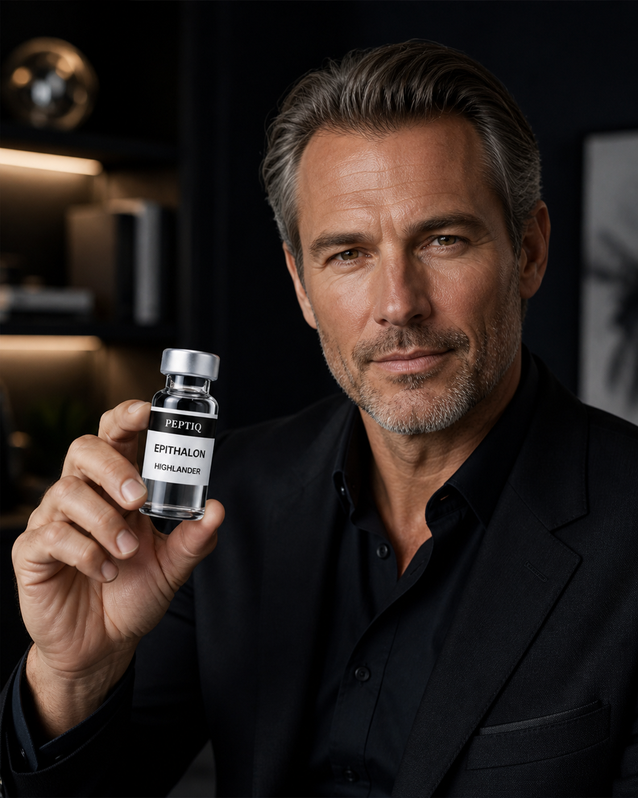
Epithalon (research-grade compound) · ciclo intermitente
Protocolo sugerido
| Péptido | Dosis | Frecuencia | Vía | Ciclo |
|---|
| NAD+ (NJ1000) | 50–100 mg / día | Diaria | SC o IM | 10 días ON / 20 OFF |
| Epithalon (ET50) | 5–10 mg / día | Diaria | SC | 10 días, 2× al año |
| GHK-Cu (CU100) | 1–2 mg / día | Diaria | SC abdomen | 30 días |
Para investigación de laboratorio. No para consumo humano.
Marcadores para tracking
Antes y después del ciclo, mide energía subjetiva (escala 1–10 diaria), calidad de sueño (Oura, Whoop), tiempo a recuperación post-ejercicio, y de ser posible: hsCRP (inflamación basal), lactato en ayuno (función mitocondrial), HOMA-IR (sensibilidad a insulina) y, en programas serios, edad biológica epigenética (TruDiagnostic, Horvath clock) cada 6 meses.
Tip clínico — la primera dosis de NAD+
La inyección SC de NAD+ a dosis completa (100 mg) es notoriamente incómoda en los primeros 5–10 minutos: sensación de calor, opresión torácica leve, urgencia urinaria. Es transitoria y autolimitada, no es alergia. Estrategia: empezar con 25 mg el primer día, escalar a 50 mg, luego a 100 mg, y administrar lentamente (inyección SC tomada en 60 segundos, no 5 segundos).
Fuentes: Rajman L, Chwalek K, Sinclair DA. Cell Metab 2018 (29514064) · Verdin E. Science 2015 (26785480) · Khavinson VK et al. Bull Exp Biol Med 2003 (14523535) · Anisimov VN, Khavinson VK. Biogerontology 2010 (19802582) · Yoshino J et al. Cell Metab 2018 (29249689).
Prime Titan · Tesamorelin + CJC-1295 + Ipamorelin · pulso GH endógeno amplificado
Línea 04 · Performance & recomposición
Prime Titan.
Tu propia GH, dos veces.
No inyectamos hormona de crecimiento sintética. Le pedimos a tu hipófisis que libere más de la tuya. CJC-1295 más Ipamorelin amplifican el pulso nocturno endógeno; Tesamorelin (research-grade compound) es el único secretagogo GHRH aprobado por la FDA — actúa específicamente sobre grasa visceral.
Por qué pulsátil, no sostenido
Tu hipófisis libera GH en pulsos discretos durante las fases de sueño profundo (3 y 4). Inyectarse hormona sintética recombinante (rHGH) satura el receptor 24 horas y dispara mecanismos compensatorios — el cuerpo regula a la baja receptores y produce menos endógena al discontinuar.
Los secretagogos como CJC-1295 e Ipamorelin amplifican el pulso natural sin destruir el patrón circadiano. Al discontinuar, el sistema regresa a baseline sin caída adicional. Es la diferencia entre prestarle dinero a un país vs imprimir billetes: lo segundo es más rápido pero genera consecuencias.
Tesamorelin — el específico
Tesamorelin es el único secretagogo GHRH aprobado por la FDA, originalmente para lipodistrofia en pacientes HIV (Falutz et al., NEJM, 2007). Actúa sobre el receptor GHRH amplificando GH endógena, pero su efecto clínico distintivo es la reducción específica de grasa visceral — el tejido adiposo que rodea los órganos abdominales y se asocia a riesgo cardiometabólico.
En el ensayo fase III: −15% de grasa visceral en 26 semanas, sin cambio significativo en masa magra. No es un agente para pérdida de peso global; es un agente para recomposición.
Protocolo sugerido
| Péptido | Dosis | Frecuencia | Vía | Timing |
|---|
| CJC-1295 + Ipamorelin (CP10) | 100 µg + 200 µg | 5 noches / sem | SC abdomen | 30 min pre-sueño |
| Tesamorelin (TSM10) | 1–2 mg | Diaria | SC | Mañana, ayuno |
| Ipamorelin solo (IP10) | 200–300 µg | 5 noches / sem | SC | Pre-sueño |
Para investigación de laboratorio. No para consumo humano.
Stack típico TITAN
Tesamorelin AM + CJC/Ipa PM + entrenamiento de fuerza 4× sem + proteína 1.6–2.0 g/kg/día + sueño 7.5+ h. Sin entrenamiento de resistencia mecánica progresiva, los secretagogos GH amplifican un estímulo anabólico que no existe.
Regla de oro — ayuno
No comer azúcares ni carbohidratos densos en las 2 horas previas y posteriores a la inyección. La insulina elevada bloquea la liberación de GH inducida por estos secretagogos. Es el punto único más importante del protocolo y el que se ignora en el 80% de los ciclos fallidos.
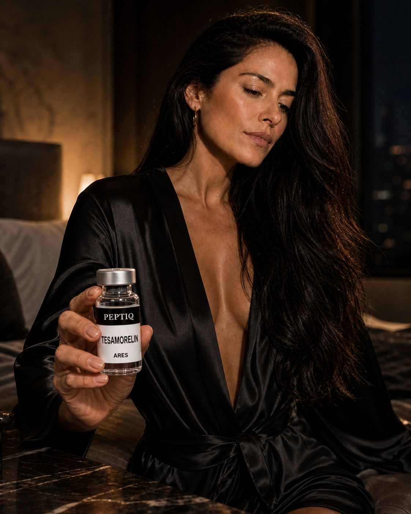
Tesamorelin (research-grade compound) · vía SC matinal en ayuno
Observaciones de seguridad
Los secretagogos GH pueden producir transitoriamente retención de líquidos, hormigueo en manos, somnolencia post-dosis (deseable: indica pulso de GH activo). Vigilar glucosa en ayunas y HbA1c: GH eleva ligeramente la glucemia. Contraindicado en cáncer activo, embarazo, lactancia, retinopatía diabética activa. No combinar con rHGH exógena.
Fuentes: Teichman SL et al. J Clin Endocrinol Metab 2006 (16352683) · Raun K et al. Eur J Endocrinol 1998 (9849822) · Falutz J et al. N Engl J Med 2007 (18032763) · Sinha DK et al. Transl Androl Urol 2020 (32257879) · Stanley TL et al. JAMA 2014 (24449315).
Shred · Retatrutide · agonista triple GLP-1 / GIP / glucagón
Línea 05 · Recomposición agresiva
Shred.
Apetito, glucosa, gasto.
La generación nueva de análogos de incretinas. Semaglutide (research-grade compound) actúa sobre GLP-1; Cagrilintide combina GLP-1 con análogo de amilina; Retatrutide es el primer agonista triple GLP-1/GIP/glucagón con datos de fase II. Pérdidas reportadas en literatura clínica: hasta 24% de masa corporal en 48 semanas.
Mecanismo de acción
Semaglutide es un análogo de GLP-1 que retrasa el vaciamiento gástrico, modula la señal de saciedad en hipotálamo y mejora secreción de insulina dependiente de glucosa. Reportes de pérdida de peso del 15% en STEP-1 (Wilding et al., NEJM 2021).
Cagrilintide + Semaglutide (CagriSema) añade un análogo de amilina, hormona pancreática que refuerza saciedad por una vía distinta. Sinergia clínica reportada por Frias et al. en Lancet 2023.
Retatrutide es el agonista triple — actúa sobre GLP-1, GIP y glucagón simultáneamente. El glucagón aumenta el gasto energético basal, distinguiéndolo de los anteriores. Jastreboff et al. (NEJM 2023) reportaron pérdida de 24% del peso corporal en 48 semanas a dosis altas.
Diferencias prácticas
- Semaglutide · efecto dominante en apetito · sólido, predecible
- CagriSema · saciedad combinada · mejor adherencia clínica
- Retatrutide · adicionalmente eleva gasto energético · curva de pérdida más empinada
La elección depende del perfil del paciente. Resistencia a Semaglutide después de 6 meses (plateau) suele responder a la rotación a Retatrutide. Pacientes con saciedad insuficiente en monoterapia son candidatos para CagriSema.
Material para investigación de laboratorio. No es indicación clínica.

CagriSema · viales research-grade · titulación gradual
Protocolo sugerido
| Compuesto | Dosis inicial | Titulación | Vía |
|---|
| Semaglutide | 0.25 mg / sem | Doblar c/4 sem hasta 2.4 mg | SC abdomen |
| CagriSema | 0.25 mg / sem | Hasta 2.4 mg / 2.4 mg | SC |
| Retatrutide | 2 mg / sem | Hasta 8–12 mg / sem | SC |
Para investigación de laboratorio. No para consumo humano.
Stack típico
Análogo de incretina + proteína 1.8–2.2 g/kg/día (proteger masa magra) + entrenamiento de fuerza 3–4× sem + vitaminas B12, D, magnesio + hidratación 35 ml/kg. La pérdida muscular es el riesgo principal de cualquier protocolo de pérdida agresiva.
Observaciones de seguridad — críticas
Efectos secundarios frecuentes: náusea, estreñimiento, reflujo, especialmente en titulación rápida. Pancreatitis es el riesgo serio aunque infrecuente — vigilar dolor abdominal alto persistente. Contraindicado en historia personal o familiar de carcinoma medular de tiroides, MEN-2, enfermedad biliar activa, embarazo, lactancia. Riesgo regulatorio en México: Retatrutide aún no está aprobado por COFEPRIS, su uso fuera de investigación queda exclusivamente bajo riesgo del usuario.
Fuentes: Wilding JPH et al. N Engl J Med 2021 (33567185) · Jastreboff AM et al. N Engl J Med 2023 (37354531) · Frias JP et al. Lancet 2023 · Garvey WT et al. Nat Med 2022 · Knudsen LB, Lau J. Front Endocrinol 2019.

Sleep Reset · Ipamorelin nocturno + Epithalon · arquitectura del sueño
Línea 06 · Restauración del sueño
Sleep Reset.
Arquitectura del sueño.
Ipamorelin (research-grade compound) administrado 30 minutos antes de dormir amplifica el pulso nocturno de GH endógena, profundizando las fases 3 y 4 del sueño. Epithalon, según la literatura rusa de Khavinson, mejora ritmo circadiano y secreción de melatonina.
Mecanismo
Ipamorelin activa el receptor de grelina en hipófisis e induce un pulso de GH limpio, sin elevación significativa de cortisol o prolactina (a diferencia de GHRP-6 o hexarelina). Ese pulso ocurre en sincronía con el inicio del sueño profundo, profundizando la fase 3.
Epithalon (Ala-Glu-Asp-Gly) actúa sobre la pineal regulando la secreción de melatonina y restaurando ritmo circadiano alterado por edad o desfase. Korkushko et al. reportaron normalización del patrón circadiano en sujetos mayores tras ciclos de Epithalon.
El stack es particularmente útil en sujetos con sueño fragmentado, despertares múltiples, sensación de "no haber descansado" pese a 7+ horas en cama, o jet-lag persistente.
Protocolo sugerido
| Péptido | Dosis | Frecuencia | Timing |
|---|
| Ipamorelin | 200–300 µg | 5 noches/sem | 30 min pre-sueño |
| Epithalon | 5 mg | Diaria | Tarde, 10 días ciclo |
| DSIP (opcional) | 100–200 µg | Pre-sueño | Pulsado |
Para investigación de laboratorio.
Tracking
Oura ring o Whoop comparativos sem 1 vs sem 8: % sueño profundo, HRV nocturno, latencia al sueño. Esperar mejoras evidentes desde la semana 3.
Observaciones de seguridad
Ipamorelin tiene perfil de seguridad muy favorable. Vigilar glucosa en ayunas en uso prolongado. Evitar combinación con rHGH exógena. Embarazo y lactancia, contraindicación absoluta.
Fuentes: Raun K et al. Eur J Endocrinol 1998 (9849822) · Khavinson VK, Morozov VG. Mech Ageing Dev 2003 (12714253) · Korkushko OV et al. Bull Exp Biol Med 2007.
Línea 07 · Vitalidad & eje hipotálamo-hipófisis-gonadal
Vitality.
PT-141 & Kisspeptin.
Dos péptidos que actúan sobre dos pisos diferentes del mismo eje. PT-141 (Bremelanotide, research-grade compound) trabaja a nivel central — es agonista de los receptores de melanocortina en SNC. Kisspeptin actúa sobre hipotálamo, induciendo liberación de GnRH y reactivando el eje completo.
PT-141 — central, no vascular
A diferencia de los inhibidores de PDE5 (sildenafilo, tadalafilo) que actúan periféricamente sobre flujo sanguíneo, PT-141 actúa centralmente sobre los receptores MC3R y MC4R del sistema nervioso central. Su efecto es sobre el deseo sexual, no sobre la mecánica vascular.
Aprobado por la FDA bajo el nombre Vyleesi para trastorno del deseo sexual hipoactivo en mujeres premenopáusicas. Uso reportado fuera de etiqueta en hombres con respuesta parcial a PDE5.
Kisspeptin — el regulador maestro
Kisspeptin es el péptido descubierto en 2003 que reescribió el entendimiento del eje HPG. Es el activador upstream de las neuronas GnRH del hipotálamo: sin kisspeptin no hay pulsatilidad de GnRH, sin GnRH no hay LH/FSH, sin LH/FSH no hay producción gonadal.
Comins-Boo et al. y Skorupskaite et al. han reportado uso de kisspeptin-10 y kisspeptin-54 en restauración del eje en hombres con hipogonadismo funcional y mujeres con amenorrea hipotalámica.
| Péptido | Dosis | Frecuencia | Vía | Notas |
|---|
| PT-141 | 1.0–1.75 mg | PRN, máx 8/mes | SC | 45 min pre-actividad |
| Kisspeptin-10 | 50–100 µg/kg | 2–3× sem | SC | Pulsátil, ciclos 4 sem |
Observaciones
PT-141: hiperpigmentación transitoria leve, náusea (resolución en 30 min), eritema facial. Cuidado en hipertensión no controlada. Kisspeptin: bien tolerado en literatura. Ambos: para investigación, no consumo humano. Embarazo, lactancia, contraindicado.
Fuentes: Pfaus JG et al. Pharmacol Biochem Behav 2007 · Kingsberg SA et al. Obstet Gynecol 2019 · Skorupskaite K et al. Hum Reprod Update 2014 (24664881) · George JT et al. J Clin Endocrinol Metab 2011.
Neuro · Semax intranasal · trabajo cognitivo prolongado
Línea 08 · Sistema nervioso central
Neuro.
Foco, BDNF, plasticidad.
Dos neuropéptidos clásicos de la escuela rusa. Semax (research-grade compound) es un fragmento de ACTH(4–10) modificado, administrado por vía intranasal, con efecto sobre BDNF y NGF. Cerebrolysin es un hidrolizado de neuropéptidos porcinos con datos clínicos en ictus y deterioro cognitivo.
Semax
Aprobado en Rusia para ictus isquémico y déficit cognitivo, Semax actúa elevando expresión de BDNF y NGF en hipocampo y corteza prefrontal. La vía intranasal aprovecha el bulbo olfatorio como ruta directa al SNC, evitando la barrera hematoencefálica.
Reportes de mejora en atención sostenida, memoria de trabajo y resistencia al estrés cognitivo prolongado. Ashmarin IP et al. han documentado el perfil neuroprotector durante tres décadas en literatura rusa.
Cerebrolysin
Mezcla de neuropéptidos derivados de cerebro porcino. En meta-análisis Cochrane sobre ictus isquémico agudo, los datos son mixtos pero apuntan a efecto neuroprotector con dosis altas administradas en ventana temprana.
Uso fuera de etiqueta en deterioro cognitivo leve, recuperación post-conmoción cerebral, neuropatía diabética. Curso típico: 5–10 ml IM diario por 10–20 días, 2–3 ciclos al año.
| Péptido | Dosis | Vía | Frecuencia | Ciclo |
|---|
| Semax 1% | 2–4 gotas (200–400 µg) por fosa | Intranasal | 2–3× / día | 10–14 días |
| Cerebrolysin | 5–10 ml | IM | Diaria | 10–20 días |
| Selank (opcional ansiolítico) | 250–500 µg | Intranasal | 2× / día | 10–14 días |
Observaciones
Semax y Selank tienen perfil de seguridad notable, sin reportes de adicción ni síndrome de abstinencia. Cerebrolysin en pacientes con epilepsia o riesgo de crisis convulsivas: precaución, vigilar.
Fuentes: Ashmarin IP et al. Neurochem Res 2005 · Heiss WD et al. Stroke 2012 · Plosker GL, Gauthier S. CNS Drugs 2009 · Kolomin TA et al. Curr Pharm Des 2013.
Línea 09 · Grasa visceral específicamente
Visceral Cut.
El depósito que importa.
No toda la grasa es igual. La grasa subcutánea es relativamente inofensiva. La grasa visceral — la que rodea hígado, páncreas, intestino — es metabólicamente activa, inflamatoria y predictor independiente de enfermedad cardiometabólica.
Tesamorelin (research-grade compound) es el único secretagogo GHRH con datos de fase III específicamente sobre reducción de grasa visceral. En el ensayo pivotal de Falutz (NEJM 2007), 26 semanas redujeron 15% del depósito visceral medido por TC abdominal, sin cambio significativo en masa magra.
El protocolo Visceral Cut es Tesamorelin como monoterapia, en hombres y mujeres con perímetro abdominal elevado pese a peso corporal normal — el fenotipo "skinny fat" o adiposidad visceral asintomática.
Protocolo
| Dosis | Frecuencia | Vía | Timing | Duración |
|---|
| 1–2 mg | Diaria | SC | Mañana, ayuno | 16–26 sem |
Tracking
Perímetro abdominal mensual; idealmente DEXA o resonancia con cuantificación de tejido adiposo visceral basal y a las 16 semanas.
Tesamorelin · monoterapia · ayuno matinal estricto
Fuentes: Falutz J et al. N Engl J Med 2007 (18032763) · Stanley TL et al. JAMA 2014 (24449315) · Stanley TL et al. Lancet HIV 2019.
GLOW Cabello · AHK-Cu (research-grade compound) · folículo activo
Línea 10 · Folículo piloso
GLOW Cabello.
AHK-Cu, sin rebote.
Tripéptido de cobre específico para folículo piloso (Ala-His-Lys-Cu²⁺). Estimula proliferación de células de la papila dérmica y prolonga la fase anágena del ciclo capilar. Alternativa a minoxidil sin el efecto rebote característico al discontinuar.
Ventajas vs minoxidil
Minoxidil acorta artificialmente la fase telógena forzando la entrada acelerada a anágena. Al suspenderlo, los folículos sincronizados regresan a telógena de forma simultánea, produciendo el característico shedding masivo post-discontinuación que pierde lo ganado.
AHK-Cu actúa por mecanismo distinto: no sincroniza el ciclo; prolonga anágena por señalización VEGF y por estímulo de proteoglicanos perifoliculares. La discontinuación gradual no produce shedding rebote.
Limitaciones honestas
AHK-Cu funciona únicamente si el folículo aún existe. En alopecia androgenética avanzada (escala Norwood VI–VII en hombres, Ludwig III en mujeres), el folículo ya está miniaturizado o fibrosado y AHK-Cu no puede revivir tejido perdido.
Efecto visible: semana 8–12 de uso continuo. Plateau típico a las 20 semanas. No esperar resultados antes de la semana 6.
| Protocolo | Dosis | Frecuencia | Duración |
|---|
| SC cuero cabelludo | 0.5–1 mg | 3× semana | 12–20 sem |
| Mesoterapia clínica | 1–2 mg | 1× cada 2 sem | 8 sesiones |
| Topical formulado | 0.01–0.05% serum | Diario nocturno | Indefinido |
Fuentes: Pyo HK et al. Biol Pharm Bull 2007 (17202654) · Uno H, Kurata S. J Dermatol Sci 1993 · Trüeb RM. Int J Trichology 2009.
Menopause Reset · Kisspeptin + GHK-Cu · enfoque sistémico
Línea 11 · Transición menopáusica
Menopause
Reset.
Protocolo de soporte para perimenopausia y menopausia que actúa sobre tres ejes: regulación del eje HPG (kisspeptin), restauración de matriz cutánea (GHK-Cu) y soporte de sueño y composición (Ipamorelin).
La caída estrogénica acelera pérdida de colágeno cutáneo (~30% en los primeros 5 años de menopausia), reduce densidad ósea, fragmenta el sueño y altera composición corporal. Este protocolo no reemplaza terapia hormonal sustitutiva — la complementa o, en pacientes que no son candidatas a TRT, ofrece una vía alternativa de mantenimiento estructural.
Protocolo
| Péptido | Dosis | Frecuencia | Vía |
|---|
| Kisspeptin-10 | 50 µg/kg | 2× sem | SC |
| GHK-Cu | 2 mg/día | Diaria 30 d | SC |
| Ipamorelin | 200 µg | 5 noches/sem | SC pre-sueño |
Para investigación de laboratorio. No para consumo humano.
Coordinación clínica
Este protocolo está pensado para uso en clínica bajo supervisión ginecológica. La transición menopáusica es un fenómeno multisistémico; la integración con TRT, tamizaje oncológico de rutina, densitometría ósea y perfil cardiometabólico anual es indispensable. PEPTIQ ofrece este material como referencia para la conversación con el especialista, no como sustituto de evaluación clínica.
Fuentes: Skorupskaite K et al. Hum Reprod Update 2014 (24664881) · Pickart L, Margolina A. Biomed Res Int 2018 · Genazzani AR. Climacteric 2020.
Gut Reset · BPC-157 oral entérico + KPV · IBD, intestino permeable
Línea 12 · Mucosa GI & inflamación visceral
Gut Reset.
Mucosa, inflamación, barrera.
BPC-157 fue descubierto como factor citoprotector gástrico, derivado de jugo gástrico humano. KPV (research-grade compound) es el fragmento C-terminal de α-MSH, antiinflamatorio potente con afinidad selectiva por mucosas. Juntos, el stack de referencia para enfermedad inflamatoria intestinal en literatura preclínica.
Mecanismo conjunto
BPC-157 oral con cubierta entérica resiste pH gástrico y libera el péptido en intestino delgado, donde restaura tight junctions de epitelio (claudina, ocludina) y reduce permeabilidad intestinal medida por lactulosa-manitol.
KPV inhibe la vía NF-κB en células epiteliales y inmunes de mucosa. Reduce expresión de TNF-α, IL-1β, IL-6 sin la inmunosupresión sistémica de los corticoides. En modelo murino de colitis DSS, Kannengiesser et al. reportaron 50% de reducción en score histológico.
Usos en investigación
- Colitis ulcerosa en remisión (mantenimiento)
- Enfermedad de Crohn (brotes leves a moderados)
- Síndrome de intestino permeable
- SIBO post-tratamiento (restauración de barrera)
- Esofagitis eosinofílica
- Dermatitis atópica con eje gut-skin
| Compuesto | Dosis | Frecuencia | Vía | Duración |
|---|
| BPC-157 oral entérico | 500 µg | 2× día | Oral | 8–12 sem |
| BPC-157 SC | 250 µg | 1× día | SC | 4–8 sem |
| KPV oral | 200–400 µg | 1–3× día | Oral entérico | 8–12 sem |
| KPV topical (dermat.) | 1% crema | 2× día | Topical | Hasta resolución |
Fuentes: Sikiric P et al. J Physiol Paris 2014 (25173697) · Kannengiesser K et al. Inflamm Bowel Dis 2008 (18200517) · Luger TA, Brzoska T. Ann NY Acad Sci 2007 (17344549) · Bohm M, Luger T. Curr Opin Investig Drugs 2010.
Cómo elegir tu protocolo.
Esta matriz mapea los doce objetivos más frecuentes en consulta hacia la línea PEPTIQ correspondiente. Es un punto de partida; un protocolo final debe individualizarse considerando edad, perfil hormonal basal, antecedentes oncológicos, medicación crónica y objetivos a 6–12 meses. Para casos compuestos, los stacks listados son los más frecuentes en literatura.
| Objetivo principal | Línea PEPTIQ | Componentes | Ciclo típico | Ticket aprox. |
|---|
| Lesión deportiva · tendón · ligamento | Wolverine | BPC-157 + TB-500 | 6–8 sem | $5,499 |
| Piel · arrugas · firmeza | GLOW Trinity | Trinity blend + GHK-Cu topical | 8 sem | $7,499 |
| Energía · longevidad sistémica | Highlander | NAD+ + Epithalon + GHK-Cu | 30 días + intermitente | $14,999 |
| Composición corporal · masa magra · sueño | Prime Titan | Tesamorelin + CJC + Ipa | 16 sem | $14,999 |
| Pérdida de peso significativa | Shred | Retatrutide o Semaglutide | 24–48 sem | $12,999+ |
| Sueño fragmentado · fatiga matinal | Sleep Reset | Ipamorelin + Epithalon | 8 sem | $5,499 |
| Libido · vitalidad sexual | Vitality | PT-141 + Kisspeptin | PRN + ciclos | variable |
| Foco · cognición · post-conmoción | Neuro | Semax + Cerebrolysin | 10–14 días | $8,999 |
| Grasa visceral aislada | Visceral Cut | Tesamorelin monoterapia | 16–26 sem | $7,499/mes |
| Caída de cabello androgenética temprana | GLOW Cabello | AHK-Cu mesoterapia | 12–20 sem | $3,799/mes |
| Perimenopausia · sueño · piel · libido | Menopause Reset | Kisspeptin + GHK-Cu + Ipa | 3 meses | consultar |
| Crohn · CU · intestino permeable | Gut Reset | BPC-157 entérico + KPV | 8–12 sem | $5,999 |
Capítulo V · 02 de 02
Tres preguntas antes de empezar.
01 · ¿Cuál es tu marcador objetivo?
Sin marcador, no hay protocolo serio. Antes de comprar el primer vial, define qué vas a medir y cuándo. Para Wolverine: dolor en escala 0–10, rango articular en grados, fecha estimada de retorno a actividad. Para GLOW Trinity: foto estandarizada día 0–28–56. Para Highlander: edad biológica epigenética, hsCRP, energía subjetiva. Para Shred: peso, perímetro abdominal, DEXA si está al alcance.
Un protocolo sin tracking objetivo es indistinguible de placebo bien empacado.
02 · ¿Tu fisiología basal está lista?
Los péptidos amplifican señales endógenas. Si tu sueño está fragmentado, tu nutrición es errática, tu entrenamiento es nulo, tu vitamina D está en 18 ng/mL y tu ferritina sérica en 25 ng/mL — los péptidos no van a compensar nada.
Antes de cualquier ciclo: panel hormonal básico (testosterona total y libre, estradiol, TSH, T4 libre, IGF-1, cortisol AM), panel metabólico (HbA1c, HOMA-IR, perfil lipídico), marcadores de inflamación (hsCRP), vitamina D, ferritina, B12. La línea base es indispensable.
03 · ¿Tienes contraindicación absoluta?
Antes de cualquier péptido: cáncer activo o historia oncológica reciente contraindica todos los compuestos que estimulan angiogénesis o proliferación celular (BPC-157, TB-500, GHK-Cu, secretagogos GH). Embarazo y lactancia son contraindicación absoluta para todos los péptidos sin excepción. Diabetes no controlada, retinopatía activa, enfermedad biliar activa: precaución específica con secretagogos GH e incretinas. Trastornos de coagulación o anticoagulación crónica: revisar caso a caso.
Acompañamiento PEPTIQ
Si tu compra incluye un stack ≥ $7,500 MXN, recibes una llamada de protocolo de 30 minutos con un investigador formado en este material. Reviewamos línea base, ajustamos dosis y frecuencia a tu caso, definimos marcadores y check-ins. Si necesitas referencia a clínica especializada, mantenemos un directorio en CDMX, MTY y GDL de médicos y dermatólogos que trabajan con péptidos research-grade.
El concierge se incluye sin costo adicional. La biología es un terreno técnico — no debería navegarse en solitario.
Aviso editorial
Esta guía no constituye consejo médico ni sustituye consulta con profesional de la salud certificado. Toda decisión sobre uso de compuestos research-grade es responsabilidad exclusiva del usuario. PEPTIQ MX comercializa exclusivamente material para investigación de laboratorio.
Capítulo VI · 01 de 02
Reconstitución & conservación.
Los péptidos llegan en polvo liofilizado para máxima estabilidad de larga duración. Antes de cada ciclo, se reconstituyen con agua bacteriostática. Siguiendo el protocolo correcto, la solución es estable aproximadamente 28 días refrigerada a 2–8 °C.
Protocolo paso a paso
- Lava manos. Desinfecta el septum del vial liofilizado y del vial de agua bacteriostática con alcohol isopropílico al 70%. Espera 30 segundos a que evapore.
- Carga la jeringa con agua bacteriostática. Volumen típico: 2 mL por vial de 10 mg (concentración resultante: 5 mg/mL = 5000 µg/mL). Para concentraciones distintas, consulta la calculadora PEPTIQ.
- Inyecta el agua escurriéndola por la pared interna del vial, no directamente sobre el polvo. Esto previene formación de espuma y agregación.
- Deja reposar 60 segundos. No agites. Rota el vial suavemente entre las palmas hasta disolución completa. Puede tomar 1–3 minutos.
- Etiqueta con fecha de reconstitución usando marcador permanente sobre la tapa. Almacena a 2–8 °C en refrigerador (no congelador, no puerta).
- Carga cada dosis con jeringa de insulina U-100 estéril nueva. Nunca recargues una jeringa usada.
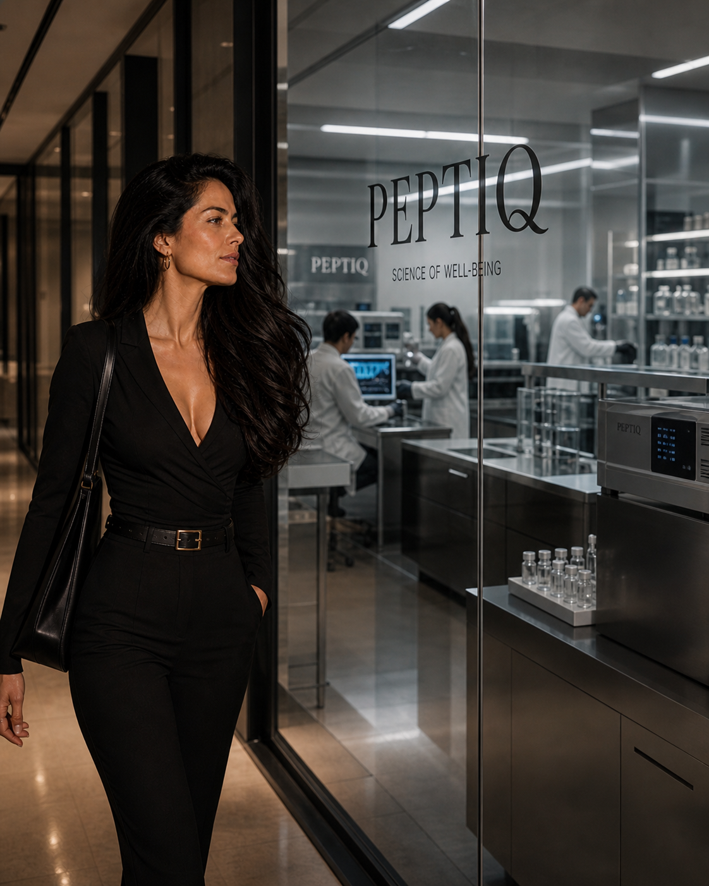
Manejo aséptico · técnica estéril obligatoria
Errores frecuentes
Agitar violentamente: rompe estructura terciaria del péptido por estrés mecánico. Siempre rotar, jamás vortex ni shaker.
Usar agua destilada o purificada simple: sin alcohol bencílico al 0.9% no hay conservador, y la contaminación bacteriana aparece en 48–72 horas con eritema en sitio de inyección.
Congelar la solución reconstituida: la cristalización fragmenta el enlace peptídico de manera irreversible. Solo refrigerar entre 2 y 8 °C.
Dejar el vial a temperatura ambiente más de una hora: acelera degradación. Regresar a refrigerador entre dosis.
Mezclar dos péptidos en la misma jeringa para ahorrar pinchazos: incompatibilidades químicas pueden destruir uno o ambos. Cada péptido en su jeringa.
Reutilizar agua bacteriostática: tras múltiples punciones del septum, la esterilidad se compromete. Vial de 3 mL → máximo 10 punciones.
Cálculo de dosis · ejemplo
Vial: BPC-157 10 mg en polvo liofilizado.
Reconstitución: 2 mL de agua bacteriostática.
Concentración resultante: 10 mg ÷ 2 mL = 5 mg/mL = 5000 µg/mL.
Jeringa de insulina U-100: 100 unidades = 1 mL. Cada unidad = 0.01 mL = 50 µg.
Dosis objetivo: 250 µg.
250 µg ÷ 50 µg/u = 5 unidades.
Dosis objetivo: 500 µg = 10 unidades.
Calculadora online
peptiqmx.com/calculadora · introduce dosis del vial, agua de reconstitución y dosis objetivo. Devuelve unidades exactas en jeringa U-100. Verifica siempre antes de cualquier protocolo.

Cada lote · NFC integrado · COA público en peptiqmx.com
Capítulo VII
Verificación de lote.
Cada caja PEPTIQ incluye un chip NFC bajo el sello holográfico que abre directamente el COA público del lote. Sin app intermediaria, sin proceso de registro.
- Acerca tu teléfono al sello holográfico. iPhone XS o posterior, Android moderno con NFC habilitado. La URL del COA se abre en navegador.
- Verifica número de lote. El lote en pantalla debe coincidir exactamente con el impreso en la caja y en cada vial.
- Lee el cromatograma HPLC. Pico único limpio > 99% de área integrada (péptidos individuales) o > 97% (blends multipéptido).
- Verifica fecha de análisis. COA emitido en los últimos 12–18 meses. Lotes más antiguos: solicítanos COA fresco antes de uso.
- Cruza con espectrometría de masas. El peso molecular reportado debe coincidir con el peso teórico del péptido (±0.5 Da).
Si recibes un lote cuyo COA no carga, no coincide o cuya pureza es inferior al umbral: peptiqmx.com/garantia-coa reembolsa el lote completo sin discusión.
Capítulo VIII · Para profesionales
Programa B2B clínicas.
PEPTIQ trabaja con clínicas de medicina estética, longevidad, hormonal y deportiva en CDMX, MTY, GDL, Querétaro, Cancún y Tijuana. Programa transparente, márgenes definidos, soporte clínico real.
Margen partner
Pricing mayoreo con descuentos del 15% al 35% según volumen mensual. Margen final clínica entre 40% y 60% sobre tarifa concierge al paciente. Factura con IVA, plazos de pago a 30 días sobre catálogo aprobado.
Soporte clínico
Material editorial de marca blanca. Llamadas de protocolo con tu equipo médico cada vez que entra una nueva línea. Templates de consentimiento informado y de tracking objetivo. Acceso a investigador dedicado por WhatsApp en horario laboral extendido.
White-label opcional
Para clínicas con volumen ≥ 200 viales/mes, ofrecemos línea white-label con tu marca, manteniendo COA Janoshik público bajo el lote correspondiente. Empaque negro mate, holográfico anti-falsificación, NFC integrado.
95%+
pureza HPLC garantizada
Para iniciar conversación con el equipo de partnerships: peptiqmx.com/b2b-clinicas · onboarding de clínica completo en menos de siete días hábiles, incluyendo training inicial al equipo médico, primer pedido demo y configuración de sistema de tracking.
Gracias por leer · Hack your limits
Pureza que no
se declara.
Se verifica.
Esta guía documenta los protocolos que usan nuestras clínicas partner y nuestros sujetos de investigación. Si llegaste hasta aquí y quieres seguir la conversación, escríbenos por WhatsApp y te mandamos el COA Janoshik del lote vigente que te interese — antes, no después, de tu compra.
Aviso regulatorio · Research Use Only
Los productos PEPTIQ MX son péptidos de investigación científica (research-grade compounds) destinados exclusivamente a uso profesional en laboratorios, investigación académica y estudios clínicos autorizados. No están aprobados por COFEPRIS ni por la FDA para uso humano. No deben ser administrados ni consumidos por personas. Toda la documentación en esta guía describe dosis, frecuencias y protocolos reportados en literatura peer-reviewed con fines exclusivamente informativos para la comunidad de investigación.
El uso de estos productos es responsabilidad única y exclusiva de la persona que los adquiere y/o utiliza. PEPTIQ MX, sus representantes, empleados y afiliados no asumen responsabilidad alguna por el uso que el comprador o terceros den a los productos después de la entrega. Cualquier aplicación fuera del contexto de investigación científica queda bajo el criterio y riesgo exclusivo del usuario final.
Acreditación analítica: Cada lote PEPTIQ es analizado por Janoshik Analytical (Praga, República Checa), laboratorio independiente acreditado bajo norma ISO/IEC 17025:2017. Los certificados de análisis (COA) se publican íntegros en peptiqmx.com con su número de lote correspondiente.
Al leer esta guía, el lector declara ser mayor de edad (18+), profesional de la investigación, médico, dermatólogo, investigador o adulto informado que actúa bajo su propia responsabilidad. Se recomienda enfáticamente consultar con un profesional de la salud certificado antes de ejecutar cualquier protocolo aquí descrito. Los protocolos citados provienen de literatura peer-reviewed identificada al final de cada capítulo y no constituyen recomendación de tratamiento.
PEPTIQ MX · Material exclusivo para investigación · Edición 2026 · Volumen I.